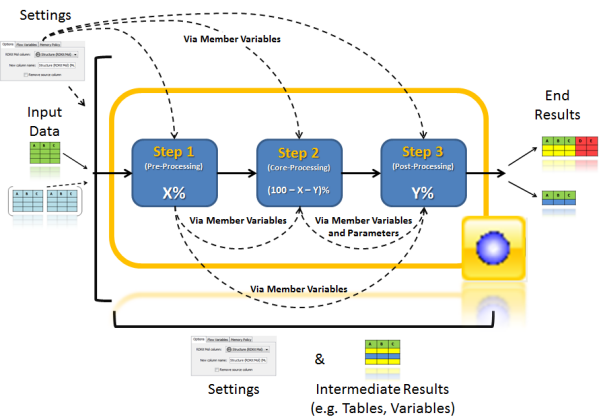

Often the execution of a node is made up of one to three steps: Some pre-processing, some core-processing and some post-processing. Between these steps intermediate results are normally exchanged. Node settings and possibly additional input data table influence the behavior of the execution.
The RDKit Node Wizard generates code that focuses mainly on the core processing (Step 2). When switching on the "Complex Code" flag, pre- and post-processing methods will be made available as well and the developer can assign a percentage value for the execution effort of these methods compared with the overall execution of the node. The following picture illustrates the process (complex option).
The model class generated by the RDKit Node Wizard is derived from the AbstractRDKitNodeModel class or a more specific sub class. Those classes orchestrate the execution of the pre-, core- and post-processing and simplify several things through many helper and utility functions, e.g. handling the freeing of resources for RDKit objects.
There are several RDKit Node Templates, which focus on a specific core scenario. Pick the one that comes closes to the scenario that you are facing.
Calculation of additional columns for a set of input data based on settings and other input data.
Calculation of new table(s) based on input data and settings, often part of the input will be merged in.
Generation of multiple output tables containing the subsets of data of one main input table based on settings and other input data.
Special case of Splitter. Generation of one output table that contains a subset of data of one main input table based on settings and other input data.
Calculation of additional columns for a subset of input data and additional splitting, all done based on settings and other input data.